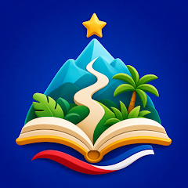
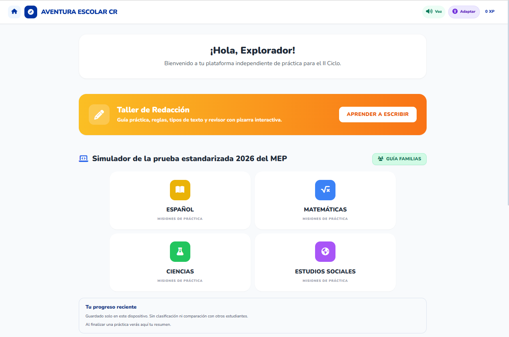

APRENDIZAJE CON IA
Preguntá, conversá
y descubrí.
La Máquina del Tiempo te permite dialogar con personajes históricos como Juan Santamaría, Carmen Lyra y Albert Einstein.
Hola, soy Juan Santamaría¿Qué querés saber de mi historia?

Aventura EscolarCR Descargar ↗EDUCACIÓN COSTARRICENSE + IA
La app que convierte la práctica escolar en retos, juegos y experiencias inteligentes para avanzar con confianza.

Aprender no es memorizar por memorizar. Es comprender, probar, equivocarse y volver a intentarlo. Aventura Escolar CR acompaña ese camino con una experiencia clara, entretenida y pensada para escolares.
APRENDIZAJE CON IA
La Máquina del Tiempo te permite dialogar con personajes históricos como Juan Santamaría, Carmen Lyra y Albert Einstein.
RETOS PARA AVANZAR
Ocho juegos educativos para convertir cada práctica en una misión.
PRÁCTICA GUIADA
Respondé, revisá tus errores y recibí orientación sobre los temas que conviene repasar.
HECHO PARA EL AULA COSTARRICENSE
Practicá contenidos de las áreas evaluadas en las pruebas nacionales estandarizadas, mediante juegos y simuladores.
Lectura, escritura y ortografía.
Razonar, resolver y avanzar.
Explorar cómo funciona el mundo.
Entender nuestra historia y país.
SIMULADORES DE EXAMEN
La app incluye simuladores de 60 preguntas por materia, basados en materiales de práctica publicados por el MEP.
¿Cuál operación representa correctamente el problema?
Elegí una respuesta para continuarMIRÁ LA AVENTURA
Recorré los simuladores, los juegos y el laboratorio de IA que esperan dentro de Aventura Escolar CR.
VIDEO DE PRESENTACIÓN
EN LOS MEDIOS
CR Hoy presentó la historia de Roy Brenes Navarro, docente de Informática y creador de Aventura Escolar CR.
Leer la entrevista completa ↗
TU PRÓXIMA AVENTURA EMPIEZA HOY
Descargá Aventura Escolar CR y convertí cada sesión de estudio en una oportunidad para avanzar.
Disponible para Android y computadoras con Windows.